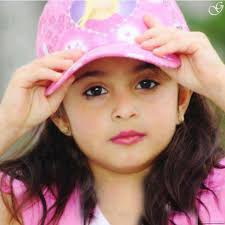

chandana desiraju
FATHER NAME:chandra sekhar
16NN1A1270
PHNO:23456782
GMAIL:desiraju.laxmi@gmail.com
ADDRESS:guntur
CARRIER OBJECTIVE
To work in an environment where can i utilize my skills and knowledge and i want to ignore my skills
EDUCATIONAL DETAILS
| S.NO | INSTITUTE NAME | COURSE | PERCENTAGE/GPA | YEAR OF PASSING |
|---|---|---|---|---|
| 1 | vignan Nirula | B.TECH | 80% | 2020 |
| 2 | sri chaitanya | mpc | 87 | 2016 |
| 3 | sri sita rama public school | ssc | 88 | 2014 |
TECHNICAL SKILLS
- c
- c++
- python
- java
- html
ACHIEVEMENTS
- Got the certificate from coding in c from vvit
- Got the certificate from coursera for IOT and from APSSDC
- Got the certificate from sololearn for python
- Got the certificate from udemy for IOT
EXTRA CIRRCULAR ACTIVITIES
- won first prize in kho-khoo
- won the prize in kabadi
- first prize in caroms
HOBBIES
- playing batminton
- listening music
- reading stories